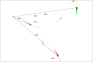
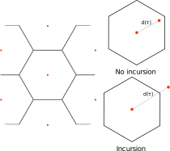
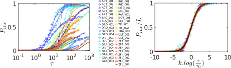
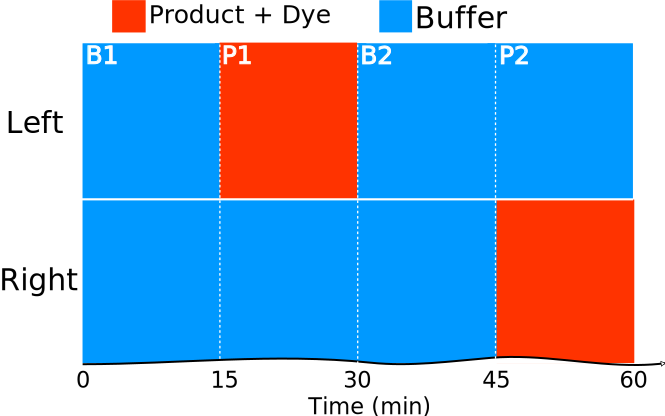
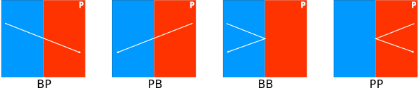

FastTrack: a general purpose tracking software
Image-based tracking
Locating objects over time from a video recording.
Challenges
- Object detection
- Complex object interactions
- Trade-off accuracy / specialization
- Trade-off accuracy / speed
Laboratory tracking
- Controlled lighting
- Uniform background
- Good image quality
- Quasi 2D
- Low fault tolerance
- Minimal human interventions
- Versatile
Existing software
Properties-based
Use dynamic properties to keep the identities (ToxTrac).
- Fast
- Error propagation
Individuals-based
Extracting a fingerprint for each individual (idtracker, idtracker.ai).
- Close to perfect accuracy
- Computationally intensive
What is missing?
A software that is:- Fast and accurate
- Reliable
- Easy to install and to use
- Flexible and adaptable to existing workflow
Two-Dimensional tracking Dataset
- 7 animal species (from cells to mice)
- Active particles
- Microfluidic droplets
- Macrocopic objects
FastTrack: a general tracking software
- Fast and automatic tracking algorithm
- Manual ergonomic correction tool
Workflow
Detection

Matching
Soft cost:
$$c_{i,j} = \frac{\delta r_{i,j}}{s_d} + \frac{\delta\alpha _{i,j}}{s_{\alpha}} + \frac{\delta a_{i,j}}{s_a} + \frac{\delta p_{i,j}}{s_p}$$Matching

Matching

Matching
 $$c_{11}=\frac{d_{11}}{s_d} +
\frac{a_{11}}{s_a}$$
$$c_{11}=\frac{d_{11}}{s_d} +
\frac{a_{11}}{s_a}$$
Matching
 $$c_{12}=\frac{d_{12}}{s_d} +
\frac{a_{12}}{s_a}$$
$$c_{12}=\frac{d_{12}}{s_d} +
\frac{a_{12}}{s_a}$$
Matching
 $$c_{13}=\frac{d_{13}}{s_d} +
\frac{a_{13}}{s_a}$$
$$c_{13}=\frac{d_{13}}{s_d} +
\frac{a_{13}}{s_a}$$
Matching
 $$C = \begin{bmatrix} c_{11} & c_{12} & c_{13}\\ & & \\ & & \end{bmatrix}$$Matching
Hard cost
- Distance: if $d_{ij}>h_d$, then $c_{ij} = \infty$
- Memory: if object $i$ lost more than $h_t$ time, then remove the $i^{th}$ line
Post processing
- Keyboards shortcuts
- Swap, delete ids
- Annotate, export the tracking
Performance

Dataset classification
Incursion: object exits its Voronoï cell defined at a time $t$, after a travel time $\tau$.
Dataset classification
Number of incursions depends on:
- Timescale $\tau$
- Density $d$
- Distribution of displacements
- Geometric properties of Voronoï cells
- Degree of motion alignment
Reduced displacement
Reduced displacement $\rho=r\sqrt{d}$
- Typical distance to neighbors $\rho=1$
- Typical distance to Voronoï cell edges $\rho=\frac{1}{2}$
Geometric probability of incursion
Geometric probability of incursion: proportion of angles for which incursions occur for a given displacement $\rho$.
Per Voronoï cell$$p(\rho)=\frac{\color{red}{\Sigma_{out}(\rho)}}{\color{red}{\Sigma_{out}(\rho)} \color{black}{+}\color{blue}{\Sigma_{in}(\rho)}} $$ $$p(\rho)=\frac{\color{red}{\Sigma_{out}(\rho)}}{2\pi}$$
Geometric probability of incursion
To account for many shapes and sizes:
$$p_{inc}(\rho)=\left< p(\rho) \right>_{cells}$$Purely static quantity.
Probability of incursion
If the dynamics is uncorrelated with the geometric properties of the Voronoï cells: $$P_{inc} = \int_{0}^{\infty} R(\rho) p_{inc}(\rho) \,d \rho $$
- $R(\rho)$ distribution of displacements at the timescale $\tau$
- $p_{inc}(\rho)$ geometric probability of incursion

Probability of incursion
At $\tau=1$, $P_{inc}$ highly sensitive to tracking errors that shift $R(\rho)$ to the right.

Timescale analysis
Optimal framerate
- Oversampled: lot of storage, higher processing time
- Undersampled: lot of incursions, higher post-processing time
- $\tau_1<1$: undersampled
- $\tau_1>1$: oversampled
Define $\tau_1$ the timescale at which the incursion probability is equal to a single incursion in the whole movie.

Integration & Distribution
Conclusion
- Easy to install
- Available on Linux, MacOS and Windows
- General: can handle various systems
- New measure of trackability with $P_{inc}$
- $\tau_1$ a criterion to find the optimal experimental framerate
Assessing chemical preference of young zebrafish
Chemical perception
Olfaction
Gustation
Common chemical sense
Assessing chemical preference
Mandatory product screening
- What product?
- What concentration?
- What age?
Time consuming experimental work.
Dual
- High-throughput screening setup
- Do It Yourself setup easy to replicate and scalable
- Open source, robust and versatile
- Separate the tank in two "virtual" compartments
- Fish can choose its prefered side
How does it work?
Dye
- Infrared dye
- Physical dye: colloidal emulsion
- Biocompatible
Experimental protocol
Analysis
Event-based
$$\rho_{event} = \frac{n_{BP} + n_{PB}}{n_{BB} + n_{PP}}$$
- $\rho_{event} = \infty$ exploration
- $\rho_{event} = 0$ exploitation
- $\rho_{event} = 1$ mixed behavior
$$\Pi_{event} = \frac{n_{BP} + n_{PP} - n_{BB} - n_{PB}}{n_{BP} + n_{PP} + n_{BB} + n_{PB}} $$
- $\Pi_{event} = 1$ attraction
- $\Pi_{event} = -1$ repulsion
- $\Pi_{event} = 0$ neutral
Two state Markov model
$p = \frac{n_{BP}}{n_{BP} + n_{BB}}$ $b = \frac{n_{PB}}{n_{PB} + n_{PP}}$Markov-based behavior quantification
- $\rho_{Markov} = 1$ exploration
- $\rho_{Markov} = -1$ exploitation
- $\rho_{Markov} = 0$ mixed behavior
- $\Pi_{Markov} = 1$ attraction
- $\Pi_{Markov} = -1$ repulsion
- $\Pi_{Markov} = 0$ neutral
Numerical simulation

- All $(p,b)$ are not accessible: sequence length & p and b rational numbers
- Strong preference $\implies$ exploitation
Dye effect
Product screening
- Citric acid: repulsive [citation]
- ATP, adenosine: attractive [citation]
ATP

ATP
Conclusion Markov model
- Capture behavior
- Capture preference